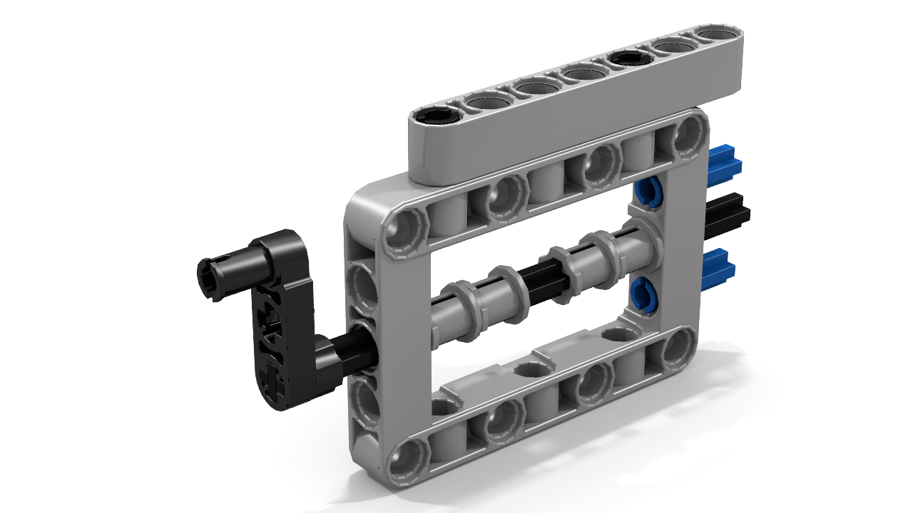
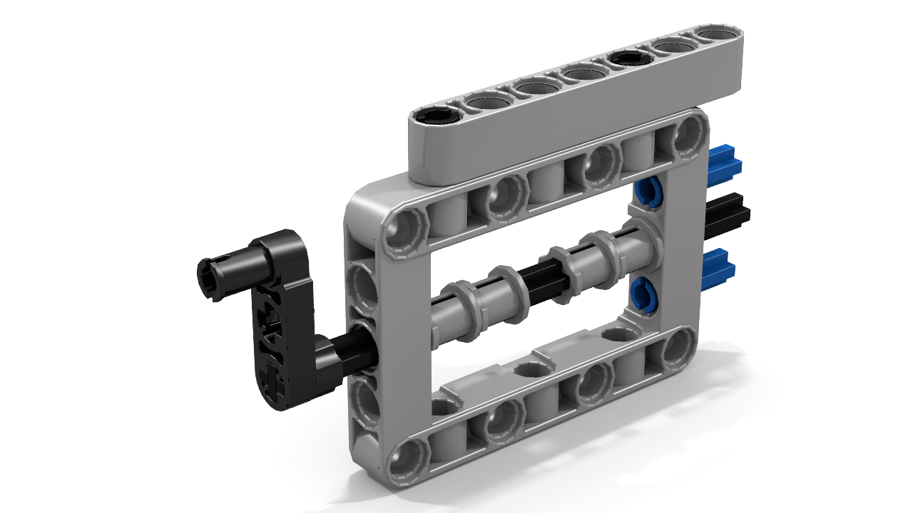
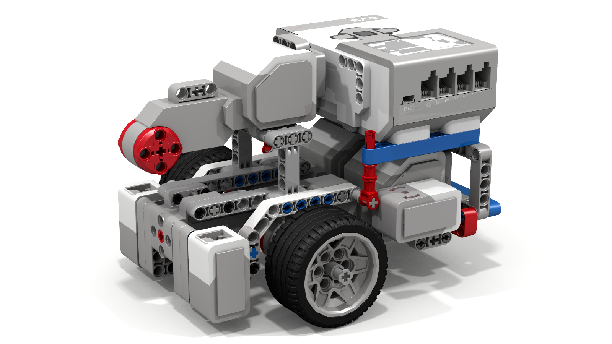
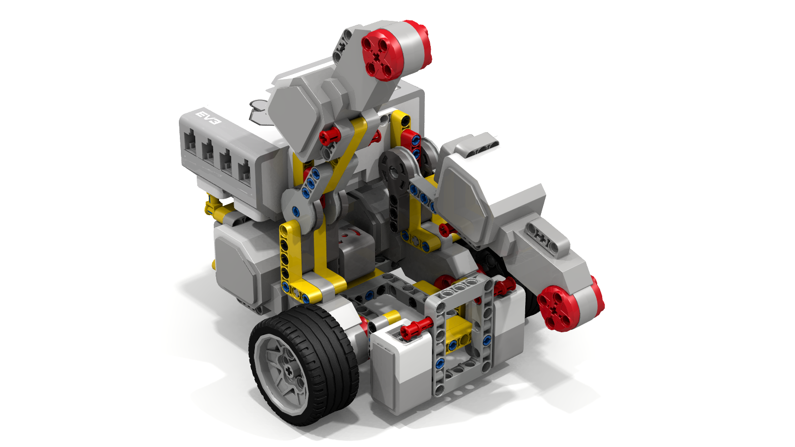
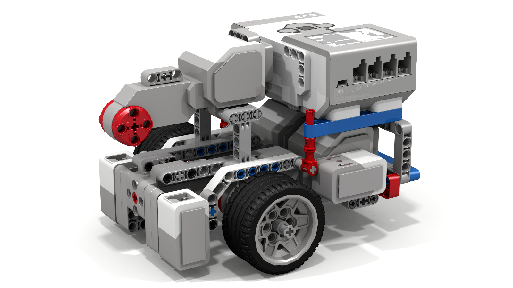
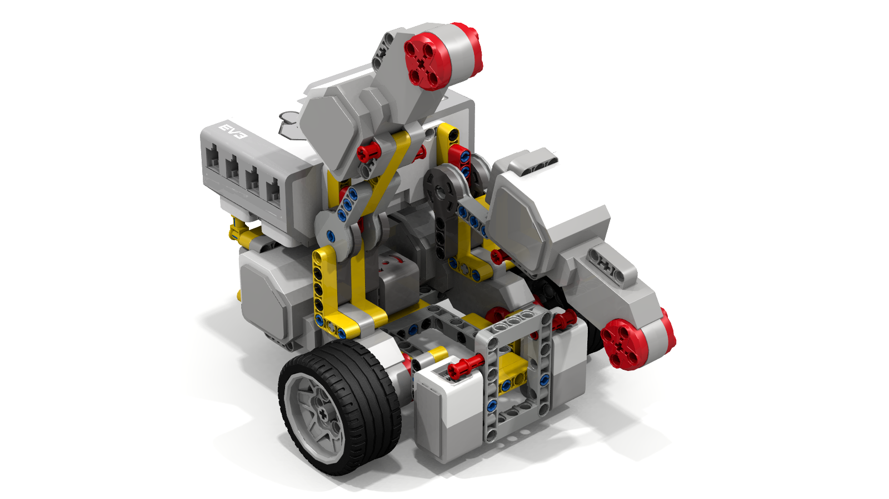

Droid Bot (Recommended build for our lessons)
 



Droid Bot is a basic robot build using only parts from 45544 LEGO® MINDSTORMS® Education EV3 Core Set + 1 color sensor. It has an outer frame that strengthens the build and allows the robot to align (straighten out on objects or walls by bumping into them). Droid Bot includes SNAP (Swappable, No Problem, Attachments with Power). Note: This robot has been built and tested with all our lessons. It will work even without a second color sensor. You need a second color sensor only for the Squaring lesson. You can also try our Out-of-the-Box Bot which does not require the 2nd color sensor.
Designed by: Sanjay and Arvind Seshan, Droids Robotics
- Droid-Bot Lego Digital Designer file updated May 30, 2015
- PDF Build Note: This PDF is automatically generated by LEGO Digital Designer (LDD). Instructions generated by LDD have flaws and are often unclear and out-of-order. You might find it easier to open the .lxf file and build directly off the LDD design.
- Image
- Attachment 1 LDD (Direct Power)
- Attachment 2 LDD (Geared Down)
- Attachment 3 LDD (Geared Up)
- SNAP Attachment Youtube Video
- Ultrasonic and Medium Motor Assembly Instructions YouTube Video
Out-of-the-Box Bot (Alternate build for our lessons)

Out-of-the-Box Bot is a basic robot build using *only* 45544 LEGO® MINDSTORMS® Education EV3 Core Set. It has an outer frame that strengthens the build and allows for straightening on walls or objects. The medium motor is in a different location than Droid Bot and hence this is an easier build. You can leave the gyro sensor off when working on the Beginner and Intermediate Lessons. Note: You will need a second color sensor to do the Squaring lesson.
Designed by: Sanjay and Arvind Seshan, Droids Robotics
Many of our lessons are compatible with the NXT. To check EV3-NXT compatibility, please visit: Compatibility Chart
The Cyberbot (recommended NXT build for our lessons)
This new NXT robot design is compact and very sturdy - ideal for classroom usage. It has been designed for use in our lessons and also works well on our Training Mats. We name it Cyberbot because of its distinctive handle which makes it look like a Cyberman from Dr. Who. The robot features a shielded color sensor as well as modular/easy to add sensors and a third motor.
Designed by: Sanjay and Arvind Seshan, Droids Robotics

The NeXT Robot is a basic robot build using the NXT System. It has an front outer frame that strengthens the build and allows for aligning (straightening the robot by bumping into walls or objects). There is a third large motor on the back of the robot. You will need a second colour sensor to do the Squaring on a Line lesson. Note: This robot has been designed in LDD, but not physically tested with our lessons. We plan to do so soon.
Designed by: Sanjay and Arvind Seshan, Droids Robotics
These designs have been contributed by members of the FLL and Robotics community. Please see Contributor FAQ to submit a design.

This is a simple, quick-build design that has been used by classroom teachers around the world. You can easily add attachments and sensors to this build. The instructions are on the website below. Note: This robot has not been tested with our lessons, but has been successfully used by 100s of educators around the world.
Design by: Damien Kee. Dr. Kee works with students and teachers from around the world, bringing the effective use of technology to the classroom.

This is a basic robot using the NXT that is good for classrooms. Since the brick is low to the ground, this design is a very stable build. The design incorporates all the basic sensors needed for classroom activities. Note: This robot has not been tested with our lessons, but has been successfully used by 100s of educators around the world.
Design by: Damien Kee. Dr. Kee works with students and teachers from around the world, bringing the effective use of technology to the classroom.

This is a simple, quick-build design that can be built easily by students in a camp.
Design by: Sam Last

Compact Bot is a basic robot build using the 45544 LEGO® MINDSTORMS® Education EV3 Core Set + 1 motor. It has a back bumper for aligning (straightening the robot by bumping into walls and objects) and a third large motor for attachments. There are a few variations on the build available on this site. Note: This robot was physically built, but not tested with our lessons. It requires one extra EV3 Large Motor.
Design by: Brian Wheeler, Hoosier Girlz
 



This is a series of robots by one designer. Although the names are similar, they all have different features. Fllying Gecko has a
pivoting EV3 Large Motor that can be adjusted
up-and-down using "stilts" of various lengths. Fllying Fish has two motors in front
for attachments. Fllying Frog has two attachment
motors and bumpers. Fllying Squirrel has two large motors
that can pivot up and down on click-hinges. You can download build instructions for these designs by clicking on the links below.
Note: These
robots require parts not available in the base EV3
set (e.g. pivoting hinges, additional
large motors, multiple ball wheels, multiple frames,
etc). Some of these elements are available in the
Expansion Set.
These robots have been designed in LDD, but not tested with our
lessons.
Designs by: David Luders, Super Garfields
Sirius is a compact robot that uses large motorcycle wheels. The robot includes a medium motor that drives any motorized attachments you may add. One of the images below includes a sample attachment. Note: This robot uses pieces not available in the base kit (e.g. large motorcycle wheels). It has been physically built, but it has not been tested with our lessons.
Design by: Builderdude35


This is a robot that has a strong outer frame with shielded color sensors. It uses two color sensors, an ultrasonic and a gyro. It uses large motorcycle wheels and a ball wheel.
Design by: Bayou Builders

{kind=link}
{kind=link}
{kind=link}
{kind=link}
{kind=link}
{kind=link}
{kind=link}
{kind=link}
{kind=link}
{kind=link}
{kind=link}
{kind=link}
{kind=link}